Dashboard
The dashboard page is an information managment tool that visually tracks, analyzes and displays your key performance indicators. It is connected to all your trade data in the form of line and bar charts. A dashboard is the most efficient way to keep track of your trades, because it provides a central location to monitor and analyze your performance.
It is designed so that it answers important questions about your trading, for quick analysis and informational awareness. It is meant to help you getting insight and awareness in your trading performance. This can help immensely with decision making, trade execution, setting targets and help you understand why some things dont work at all, so that you can make the appropriate changes to make it work and have realistic future goals.
The dashboard works very straightforward. Below is a summary of the data that is provided on the dashboard.
Open positions
When having open positions, cards will be shown on the top of the dashboard with live P/L, provided by the price ticker-api from the exchange.
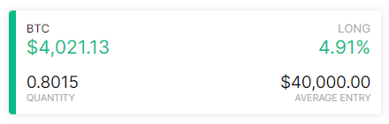
Balance
The balance chart illustrates all transactions of the portfolio, including trades, deposits, withdrawals. The low-point of this chart starts at the value of the first deposit transaction and will color green above and red below this low-point. 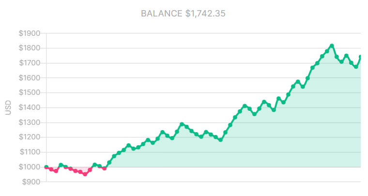
Tags
Tags will help to categorize trades based on specific labels. Categorize the trades with tags to see which category tags are profitable to trade and which ones are not. It helps identify which strategies, patterns or mistakes yield the biggest wins or losses.
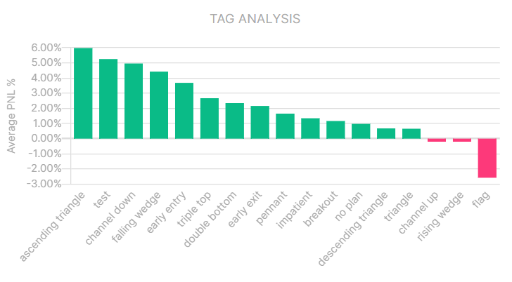
You can find more about tags on the tags documentation page.
General data
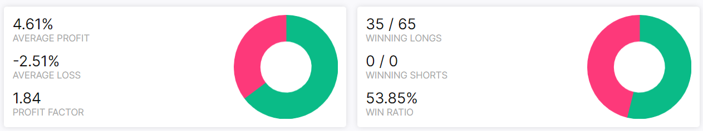
| Value | Description |
|---|---|
| Average Profit | The average percentage of all the winning trades in the portfolio. |
| Average Loss | The average percentage of all the losing trades in the portfolio. |
| Profit Factor | Profit divided by loss. If the profit factor is below 1, it signals that your strategy is unprofitable. |
| Winning Longs | Winning longs vs total longs in the portfolio. |
| Winning Shorts | Winning shorts vs total shorts in the portfolio. |
| Win Ratio | The win ratio of all the trades in the portfolio |
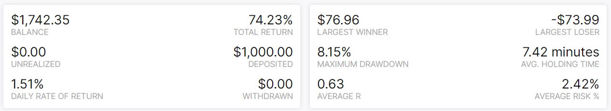
| Value | Description |
|---|---|
| Balance | Portfolio balance at this time. |
| Total Return | Total percentage of profit over your deposits. |
| Unrealized | Unrealized profit of open positions. |
| Deposited | The sum of all the deposits in the portfolio. |
| Daily rate of return | Average profit % per day. Calculated as the geometric mean of the total profit divided by the deposit. |
| Withdrawn | Total amount withdrawn from the portfolio, valued in portfolios base currency. |
| Largest winner | Largest winner valued in portfolios base currency. |
| Largest Loser | Largest losers valued in portfolios base currency. |
| Maximum Drawdown | The lowest point of portfolio drawdown. |
| Avg. holding time | The average holding time of all the trades in the portfolio. |
| Average R | Average profit of all trades in the portfolio, valued in risk-units. |
| Average Risk % | Average risk percentage of all trades in the portfolio |
Cumulative PNL %
Line chart includes all your trades PNL in percentage, adjusted to your total deposits. This chart provides an easy way to understand and visualize the effects that your trades have on the portfolio.

Drawdown %
The drawdown chart shows the peak drawdowns of the portfolio. The drawdown chart is quoted as the percentage between the peak and the subsequent through.
Drawdown refers to how much the trading account is down from the peak, before it recovers back to the peak.
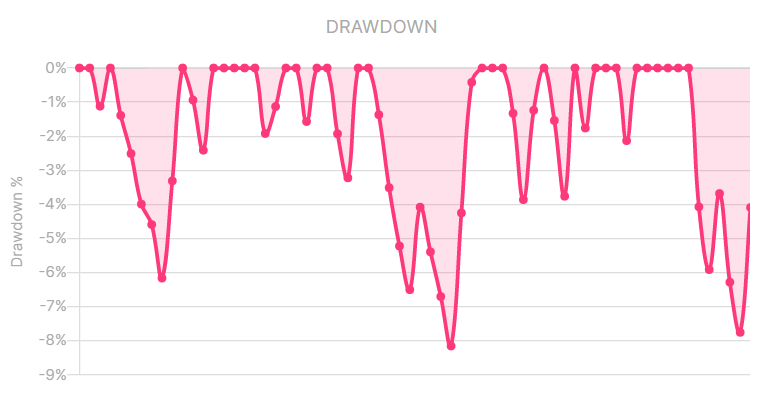
Drawdown is an important metric to measure portfolio performance or monitor personal trading performance.
PNL %
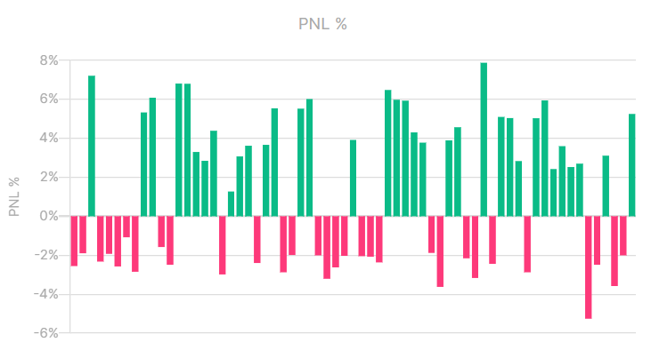
Risk %
Bar chart that displays the risk you took in percentage per trade. 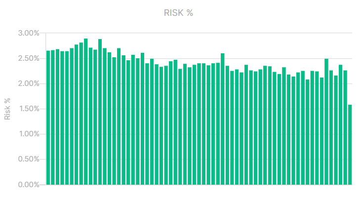
R Ratio
Bar chart that displays the Risk/Reward ratio per trade. 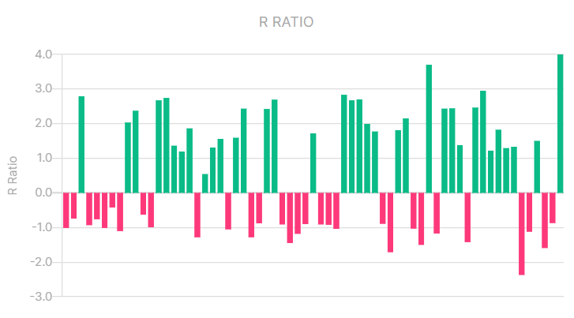
PNL %
This bar chart displays the sum of all your trades PNL per day combined in percentage. 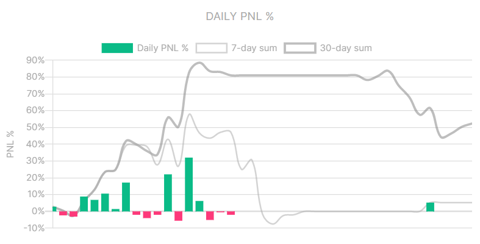
PNL
This bar chart displays the sum of all your trades PNL per day combined. 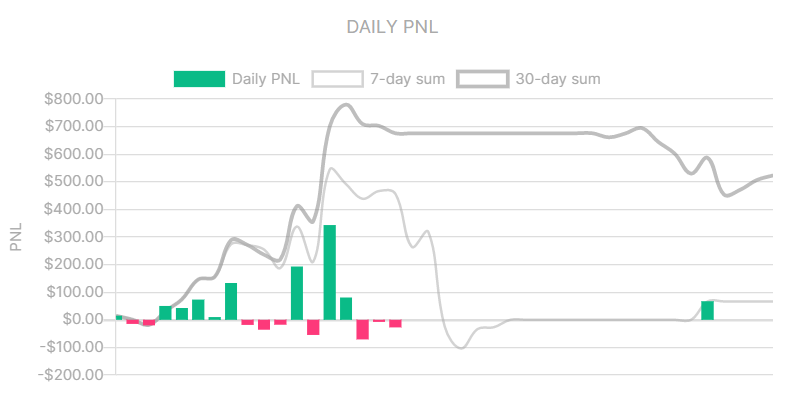
R Ratio
Bar chart that displays the Risk/Reward combined per day. 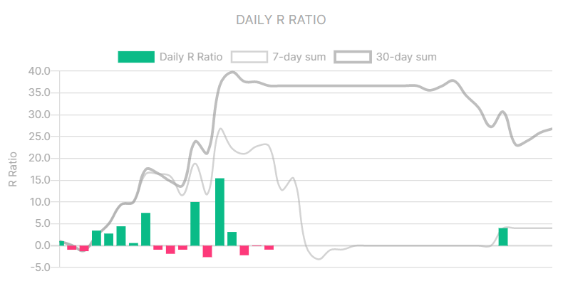